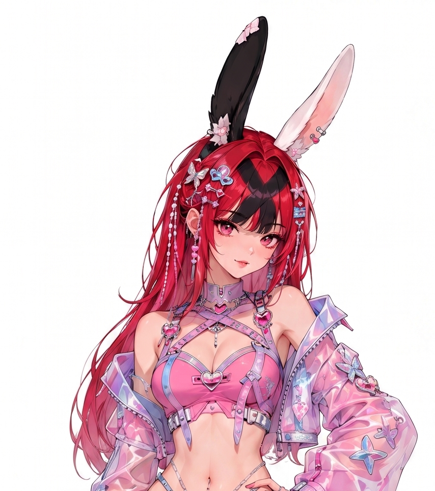

Three-frame contract
The head, full reference, and target occupy separate rotary positions; only the target is noised and scored.
Adding reference-based character identity transfer to the Anima diffusion transformer—and preventing the reference from becoming a copy shortcut.
AnimaRefLoRA gives the text-only Anima anime diffusion transformer a one-shot character reference. A head crop and the full reference image are placed beside the noised target as in-context frames, while the text prompt controls the requested pose, outfit, and scene. The central failure mode is a reference-copy shortcut: when the reference is easier to follow than the prompt, the model can reproduce its composition instead of performing the requested edit. We diagnose the full-reference frame as the main pixel-content pathway and train a LoKr adapter with difference-weighted flow matching, near-duplicate-aware pairing, tag-level caption dropout, structured reference dropout, and anime-specific identity conditioning. This page updates the original development report with a controlled qualitative study of the 500K checkpoint on two AI-generated original characters, explicitly separating appearance words from image-reference conditioning.
Identity should come from images; variation should come from text. The model receives two clean reference frames and denoises only the target frame.
The head, full reference, and target occupy separate rotary positions; only the target is noised and scored.
Anime-specific CCIP features become prototype tokens, with head-region representation alignment during training.
Changed regions receive more loss weight, while pairing and dropout prevent the full reference from becoming the only useful signal.
AnimaRefLoRA turns Anima's inherited multi-frame attention into a one-shot character-conditioning path. The backbone remains frozen; the trainable parts are a LoKr adapter, gated identity tokens, and a small representation projector.
3.1
A same-character reference–target pair is arranged as three latent frames. F₀ is a detected head crop, F₁ is the full reference, and F₂ is the target. Only F₂ is noised and scored; F₀ and F₁ remain clean at timestep zero.
3.2
For target latent ztgt, Gaussian noise ε, and noise level σ, training constructs the linear interpolation below and regresses its flow velocity. The loss is evaluated on target-frame tokens only.
σ follows a logit-normal schedule—σ = sigmoid(z) with z ~ N(0, 1) (scale 1.0), clamped to [10⁻³, 1]—with a 20% uniform high-noise mixture over [0.8, 1.0]. This forces the model to use the reference even when little target information remains. No timestep shift is applied during training; the flow shift of 3.0 is inference-only.
3.3
The Anima backbone has 28 transformer blocks with hidden size 2048. Its weights, text encoder, VAE, and modulation layers are frozen. A LyCORIS LoKr adapter—dimension 512, α 512, factor 4, full-matrix decomposition, conv dim 64 / conv α 32, excluding modulation, norm, embedder, and final layers—is trained on attention and MLP weights, together with the small identity modules.
Anima derives from NVIDIA Cosmos-Predict2 and inherits the video family's joint cross-frame self-attention—attaching the reference as extra frames therefore requires no architectural change. The same inheritance carries a cost: the video prior expects consecutive frames to be highly similar, so reproducing the reference verbatim into the target frame is this backbone's most natural default behavior (see the anti-copy section). The design reuses that cross-frame attention instead of adding a separate image-encoder adapter in the style of IP-Adapter or InstantID—general-purpose image encoders were insufficiently sensitive to anime character identity in preliminary tests. In fact, early experiments on this problem tried IP-Adapter-style cross-attention and reference-KV adapters on Anima directly. That line of work never clearly beat a plain in-context LoRA baseline under human evaluation, and its abandonment committed the project to the in-context design.
3.4
Placing all frames on the same spatial rotary-position grid gives coordinate-aligned attention a direct copy-and-paste path. F₀, F₁, and F₂ therefore receive disjoint spatial offsets as well as distinct temporal indices—the same intuition as Stand-In's Conditional Position Mapping, which places reference tokens in a separate coordinate subspace. Concretely: the three frames use temporal indices 0/1/2; F₂ sits at the spatial origin, F₀ is displaced by one full frame height along the height axis, and F₁ by one full frame width along the width axis (offset = latent grid height/width × 1.0), so the three frames occupy non-overlapping coordinate tiles. The layout is saved as a JSON sidecar beside every checkpoint and verified during inference.
A 768-dimensional CCIP (Contrastive Anime Character Image Pre-training) head embedding is projected into four identity tokens. Target tokens cross-attend to them at blocks 4, 12, and 20 through learned scalar gates initialized at 10−3—closest in spirit to IP-Adapter's decoupled cross-attention. Concretely, after each of those blocks the target-frame tokens receive two gated cross-attention residuals: (a) a frame adapter with queries from the target tokens and keys/values from all tokens of both reference frames (inner dim 512, 8 heads, output projection initialized at std 10⁻⁴), and (b) the identity tokens—the CCIP embedding is L2-normalized, layer-normed, and linearly projected into 4×512 tokens plus learned base tokens. Each path has its own scalar gate (both initialized at 10⁻³) and touches only the target frame; the module weights are saved alongside the LoKr. The "frame-adapter gates" mentioned in the component-toggle section are the gates of path (a). A naming note: in the code and checkpoints this module is still called cpm—an acronym borrowed during early planning from Stand-In's Conditional Position Mapping, which ended up attached to the wrong component. Stand-In's actual CPM idea, disjoint reference coordinates, lives on as the disjoint RoPE layout of §3.4.
Target hidden states captured at block 8 are pooled inside the detected head ROI, projected by a two-layer MLP, and aligned to the CCIP reference embedding with cosine loss weight 0.1. This is a single-image variant of representation alignment (REPA); the name follows its cross-frame extension CREPA.
Character-signature tags shared by at least 45% of a character's images are subtracted. The remaining tags describe the image-specific change—pose, view, outfit, body, expression, and scene.
A strong reference paired with weak text makes copying an easy loss-minimizing strategy. The training recipe preserves identity while reducing the reward for reproducing F₁'s pose, framing, and pixels.
Let d be the channel-averaged latent difference |ztgt − zref|, normalized to mean one. Matching regions are mostly copy supervision, while changed regions contain the text-controlled edit. Their target-frame loss weights are:
The map is clamped, floored at 1.0 inside the head ROI, and renormalized to mean one, so it redistributes learning without silently increasing the effective learning rate. The auxiliary latent reconstruction L1 term uses the same map. A separate head-ROI boost additionally multiplies the MSE weight inside the head region by up to 2.0, fading linearly back to 1.0 as σ approaches 0.6 (the face is unrecoverable under heavy noise); the two maps are multiplied and renormalized together.
A multi-crop 256-bit dHash excludes candidates within Hamming distance 25. Singleton character–resolution-bucket cells (no valid partner image) use a blank reference instead of teaching an exact self-pair copy.
On 50% of steps, each change tag surviving signature subtraction is independently retained with probability 0.5, and at least three tags are always kept. Whole-caption dropout is zero because empty text paired with a clean reference explicitly teaches copying.
On 25% of samples, F₀ only, F₁ only, or both are blanked with equal probability. This decorrelates the reference streams and preserves a usable reference-free branch.
At σ ≤ 0.8, a hinge penalty activates when cosine similarity—computed in VAE latent space—between the predicted clean target and F₁ outside the head region exceeds 0.35. Its weight is 0.05 throughout the continuation.
The evaluation on this page uses the 500K checkpoint. One three-frame architecture ran through four stages on two machines:
From-scratch validation run on RunPod (≈1.9 s/step, ≈77 hours) with the recipe of the original report. It confirmed the training design and produced a usable model, so further rented GPU time was unnecessary.
Long-horizon training moved to an idle local RTX 5090 (≈5 s/step) running as a background workload, adding the direct F₁ anti-copy hinge.
Continued with identity-accessory injection enabled, up to the 275K checkpoint used in the earlier evaluation.
Same recipe continued to the final 500K checkpoint — the one behind every result on this page. The 145K/150K/275K/500K checkpoints are stages of one continuous training lineage.
| Component | 500K setting | Purpose |
|---|---|---|
| Backbone | Anima Base v1.0, frozen | Anime-focused DiT prior and joint multi-frame attention |
| Trainable adapter | LoKr dim 512, α 512, factor 4 | Adapt attention and MLP layers without full fine-tuning |
| Identity modules | CCIP 768-d → 4 identity prototype tokens; block-8 representation alignment | Reinforce identity at token and representation levels |
| Continuation data | ≈138K cached image latents | Anime illustrations sourced from Danbooru, filtered and cleaned; expanded from the original ≈55K-image study |
| Optimizer | CAME, learning rate 1×10−5, batch 1 | Memory-efficient continuation training |
| Numerics | bf16, gradient checkpointing, TF32 | Local RTX 5090 execution |
| Reference dropout | 0.25, structured | Train head-only, full-only, and reference-free behavior |
| Caption dropout | whole caption 0; tag-level 0.5 | Support short prompts without creating empty-caption copy lessons |
| Accessory injection | probability 0.8 when present in target | Re-append signature accessory words (glasses, ribbons, …) that signature subtraction had removed, when the target image actually contains them |
| F₁ anti-copy | weight 0.05; margin 0.35; σ cutoff 0.8 | Penalize non-head resemblance to the full reference |
Checkpoint scope. The 500K file is a continuation checkpoint, not a new controlled from-scratch experiment. Consequently, the evaluation results support qualitative capability claims; they do not isolate the causal contribution of each continuation feature.
Both characters were deliberately AI-generated with unusual head designs that are rare in training data — a braided-loop headpiece wrapped around a forked horn, mismatched black/white rabbit ears, heterochromia — to test how well the model transfers a completely novel character design. The reference images exist in no training data and the base model cannot know these characters, so reference-only results attribute cleanly to the reference conditioning itself.

Red hair with a black underlayer, mismatched black/white rabbit ears, a pink heart crop top, an iridescent sheer jacket, and dense small accessories.
Wine-purple braids looping up around an ivory forked horn, heterochromia (cyan/amber), and a black military-style gothic dress.
Each row is a 2×2 intervention. The scene and outfit prompt stay fixed; we independently toggle character-appearance tags and the image reference.
Sitting at an outdoor café in a white sleeveless sundress, straw hat, and sandals, with ocean and bougainvillea behind.
A POV hand-holding shot: the character walks ahead and looks back at the viewer with a smile, through a snowy night Christmas market with wooden stalls, warm string lights, and falling snow.
An adult woman with a petite body, small breasts, and a slim waist, wearing a fitted navy turtleneck and beige high-waisted trousers in a neutral photo studio.
An adult woman with a curvy body, large breasts, and wide hips, wearing the same fitted navy turtleneck and beige high-waisted trousers in the same neutral photo studio.
The outfit stays faithful to each reference while the prompt requests a new upper-body pose. All outputs are waist-up with the legs cropped out.
One pose prompt (kneeling, high-angle view, a lightly seductive finger-licking expression) with only the outfit clause swapped: the middle column keeps the reference outfit, the right column switches to a kimono. Both columns share the seed, so differences attribute to the outfit text.
Same prompt and seed while components are switched off one at a time: the F₀/F₁ toggles control the reference-frame inputs, “CPM off” zeroes the identity-token gates, and “LoRA zeroed” clears the LoKr weights (other modules kept). The prompt deliberately contains no appearance description, so identity can only come from the components that remain.
Quantitative reading. The output change from disabling each component spans orders of magnitude: zeroing the LoRA collapses the image entirely (~100% of pixels change), blanking the reference frames changes about half the image, and switching CPM off changes under 9% of pixels without altering the identity readout; the frame-adapter gates stayed near zero throughout training. In the single-frame cells, F₁-only stays far closer to the full system than F₀-only (11–27% vs 25–48% changed pixels) — the full reference frame carries most of the identity, consistent with the earlier factorial finding that F₁ is the content pathway. Checkpoint-trend probing further shows CPM's inference contribution peaking mid-training and then receding to negligible; we read it as a transitional scaffold during training (an identity carrier while the anti-copy losses suppress the F₁ pathway) rather than a necessary inference component. These identity modules were each added in response to failures observed during development and retained (see Limitations); whether a minimal LoKr-plus-anti-copy-recipe configuration suffices remains to be verified by a from-scratch subtractive ablation — including a two-frame F₁-only variant that drops F₀ (cutting attention cost to roughly 4/9 and removing the head-detector dependency) — listed as future work.
The adapter was trained only on the official Anima Base v1.0. Here the frozen backbone is swapped wholesale for a community finetune (WAI ANIMA v10) while the LoKr, identity modules, and RoPE layout load unchanged — same 500K checkpoint, prompt, and seed — on a new half-body scene: a bust shot from slightly below, playful wink, finger heart, and a neon night-street bokeh background. Larger community-expanded Anima variants (2.9B/3B-class layer expansions of the official 2B base) have since appeared; whether the adapter carries over to those expanded architectures has not yet been verified.
Reading. Reference identity transfer holds on both bases — slightly weaker on the WAI base than on the official one, but still clearly effective — while style, shading, and lighting follow the base. The LoKr and identity modules encode the reference-conditioning behavior as weight deltas, and swapping the base applies the same deltas to a different image prior; since the deltas were learned against the official weights, the further a base drifts from that origin the larger the application error, so a slight identity weakening is exactly what one would expect. Any community base that keeps Anima's architecture and tensor shapes works directly; both the official and ComfyUI weight-naming formats load as-is. This is a single-scene, single-seed qualitative demonstration; each base's actual suitability still needs individual verification.
The controlled grid is intended for input attribution, not cherry-picked ranking. Because paired cells share initial noise, visible changes can be associated with the appearance clause, the image reference, or their interaction.
Text alone reliably introduces describable traits such as the rabbit ears and the forked horn. It cannot recover reference-specific fine ornamentation that was never named.
Reference-only cells often inherit color layout, facial structure, or silhouette, but identity can weaken when the face occupies only a small part of the frame.
The appearance-plus-reference condition is generally the most stable: text disambiguates salient attributes while F₀/F₁ and CCIP conditioning provide visual details not captured by tags.
The same identities are rendered seated at a café, posing in close-up, and re-styled in the paired body edits, without reproducing the reference pose or the transparent-background layout of the source art.
The POV hand-holding look-back at the winter market and the seaside feeding shot both work — from a front-facing reference, the model produces viewer-directed interaction poses and expressions.
The petite and curvy rows share noise, clothing, pose, and background. Both characters show a clear chest and waist/hip change without requiring a different reference image.
Interpretation boundary. These are qualitative observations from one seed per row. They demonstrate supported behaviors and visible failure modes, but do not estimate success rates.
Key measured conclusions from the earlier study that set the direction of the continuation training.
A paired diagnostic recipe with whole-caption dropout began visibly copying around 10K steps, versus roughly 25K without it. Reference dropout also differed between the runs, so this is mechanism-consistent evidence rather than a single-variable ablation.
A 16-way factorial generator toggled LoKr, the reference conditioner, F₀, and F₁. Regional normalized cross-correlation localized near-verbatim lower-body pixels primarily to the full-reference frame F₁.
Loose-threshold near-duplicate pairs represented only about 0.4% of sampled same-character pairs. They are removed as a hygiene measure, but they cannot explain the earlier 41% human-labeled copy rate.
| Historical evaluation | Observation | What may be concluded |
|---|---|---|
| 22-reference benchmark at 80K | 9/22 verbatim copies (41%) | The earlier recipe had a substantial shortcut problem. |
| Resume with diff weighting and a lower head-region loss weight at 105K | 1/22 copies (4.5%) | Consistent with faster exit from the copy phase; not a single-variable causal result. |
| From-scratch validation run (planned 150K, stopped at 145K) | Copy phase peaked near 95K and collapsed after 100K | Training dynamics can also reduce copying without an intervention control. |
The model ships as a standalone ComfyUI plugin, ComfyUI-AnimaRefLora. You load a reference image, type a prompt, and get the same results as this report's evaluation pipeline.
ComfyUI's built-in Anima sampler only supports RoPE positions up to max_h = 120. Our model places the two reference frames and the target at deliberately separated positions (§3.4), which require a much larger coordinate range. Squeezing them back into 120 would force the frames onto overlapping coordinates and re-open the copy-and-paste path the training removed. So the plugin skips KSampler entirely and samples with the project's own inference loop, using the exact RoPE layout saved next to each checkpoint.
Loads everything as one bundle: the Anima base model, the trained LoKr weights, the identity modules, the RoPE layout, and the VAE. An optional node adds a regular Anima style LoRA on top.
Takes the reference image, detects the head, and turns both the head crop and the full image into the two reference frames plus the CCIP identity embedding. Output size is chosen here in 64-pixel steps (1024×1024, 1024×576, 1152×768, …); the reference is letterboxed rather than cropped.
Generates the image with the project's own sampling loop—identical three-frame layout and guidance as in training. Without an extra style LoRA, outputs are bit-identical to the evaluation pipeline used on this page.
The node graph is simply Load Image → Ref Encode → Sampler, with the Loader supplying the model. A build script packs the plugin into a portable ~15 MB folder containing the minimal inference code; models go into ComfyUI's usual models/ folders. Inference is tested on a 32 GB RTX 5090 at 1024×1024; VRAM demand grows with output resolution. The plugin, code, and trained weights are publicly released; the weights are distributed via HuggingFace.
The evaluation study is deliberately qualitative and small: two characters, four controlled edits, two original-outfit poses, and one seed per row. It separates inference inputs cleanly, but it is not an identity benchmark or a user study. The 500K model is a continuation run with several simultaneous changes, so this page does not attribute improvement to any one component. The reference images are AI-generated original designs rather than natural scene artwork, and the style of the generated references may itself influence output style. A full evaluation should add multiple seeds, blinded identity judgments, generated-to-reference CCIP scores, prompt-adherence metrics, copy detectors, and comparisons against encoder-based adapters.
A further caveat: the training recipe accumulated over the course of the project rather than being designed as a minimal set. Development prioritized reaching a usable model as quickly as possible, so improvements were stacked — new mechanisms were added onto the existing recipe and training continued — rather than tested in isolation through controlled experiments. Each mechanism was introduced in response to a specific failure mode observed at the time and retained once the problem subsided; the full stack has not been re-ablated top-down. Some components may therefore be redundant or overlap in effect; a leaner recipe might achieve the same result while needing fewer specialized mechanisms—and fewer terms to describe them. This page documents the system as trained, not the smallest recipe that works. The training data is sourced from Danbooru; the code, the ComfyUI plugin, and the trained weights are publicly released.
@misc{animareflora2026,
title = {AnimaRefLoRA: Adding Reference-Based Character Identity
Transfer to the Anima Diffusion Transformer},
author = {{AnimaRefLoRA Project}},
year = {2026},
note = {Technical report}
}